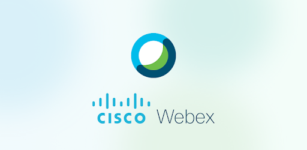

Pensamos que durante la cuarentena, tenemos varias experiencias (algunas nuevas) como lo son:
Clases virtuales
Esto ha sido una nueva experiencia para nosotros ya que nunca lo habiamos hecho, y pues hasta ahora todo ha salido bien, estamos adaptandonos a las distintas herramientas para realizar las clases virutales escogidas por los profesores y pues nos ha gustado la experiencia.
Las herramientas que hemos utilizado hasta ahora son:
Google Meet
Cisco Webex
